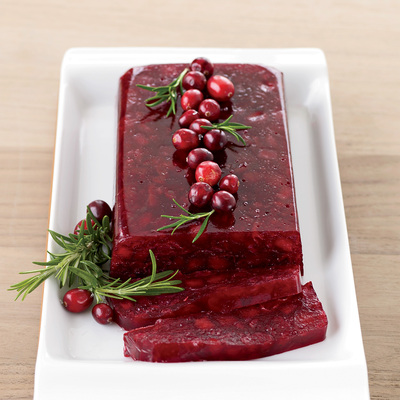

Cranberry Sauce

Cranberry sauce, sweet, tart, it brings a strong contrast to any Thanksgiving staple.
Homemade cranberry sauce is a must-have for any Thanksgiving dinner. Made from fresh or frozen cranberries.
You will want to write this recipe down somewhere. You wouldn't even spend a lot of time writing it down, it's that simple.
Easy to make, easy to mise en place, and done in 20 minutes.
Ingredients
- 1 Cup sugar, granulated
- 1 Cup water, tap, filtered, bottled, it's just water
- 4 Cups fresh or frozen cranberries
- Optional: pecans, orange zest, raisins, blueberries, nutmeg, and allspice
Directions
- Place cranberries in a colander and rise. Pick out damaged or bruised cranberries and discard.
- Boil water and sugar in a medium-sized saucepan on high and bring to a boil. Stir to dissolve the sugar.
- Add the cranberries and return to a boil. Cook the cranberries until they burst. Afterwards, lower the heat and simmer for 10 minutes or until most of the cranberries have burst.
- Stir in mix-ins, if any. Once the cranberries have burst, you can leave it as is, or add other optional ingredients.
- Remove the pot from heat and let it cool. It should be cooled completely at room temperature. Transfer to a bowl and let chill in the fridge. The sauce will continue to thicken as it cools down.